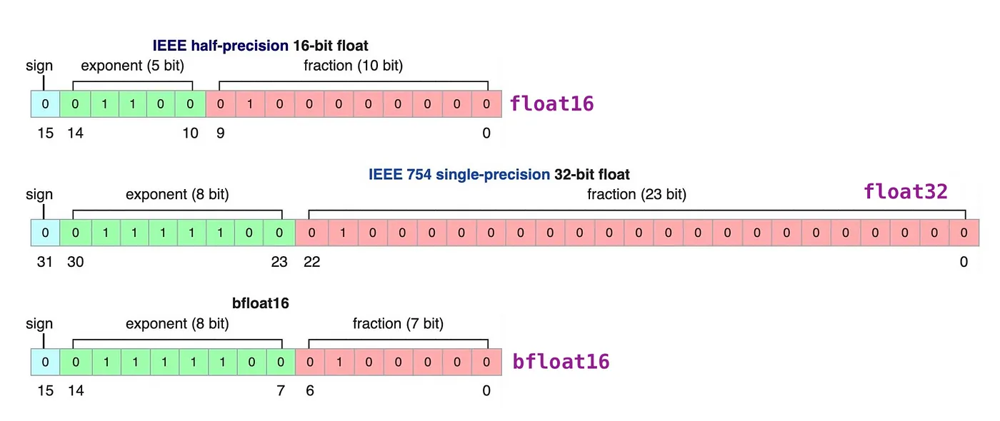
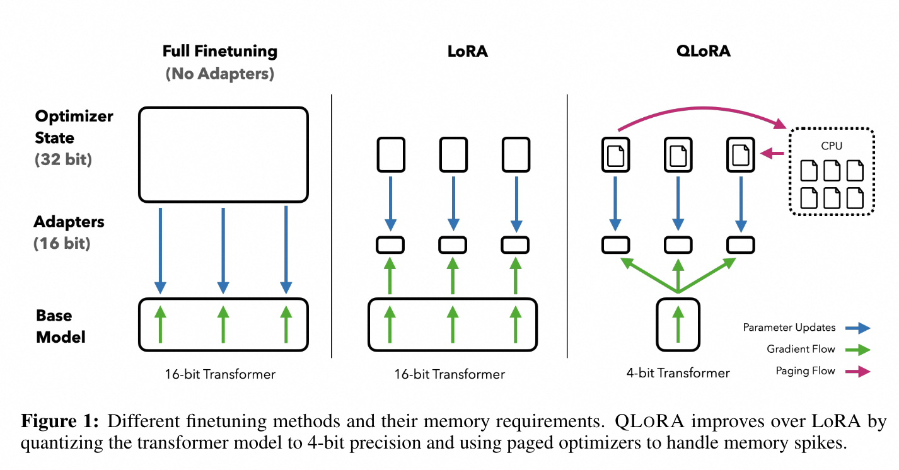
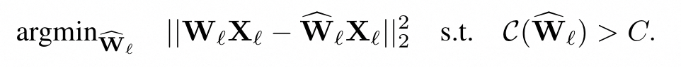
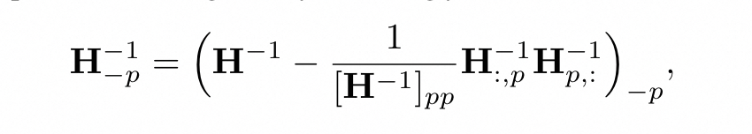
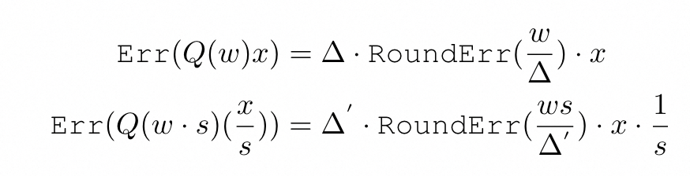
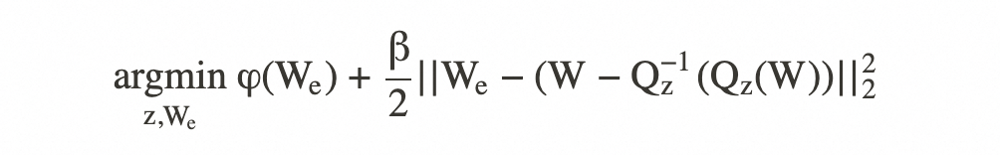
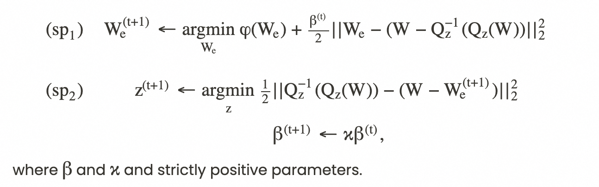

量化技术解析
量化的定义和基本原理¶
量化是将模型浮点数变为定点数运行的过程。

浮点数计算机存储方式示意图
翻译成人话就是将用小数计算结果的模型，转换成用整数计算，中间自然有精度损失（因为小数位没了，而且浮点数翻译成整形再转回来是有损压缩过程）。
有了这个定义，我们就可以继续下面要讲的部分。在继续下面的内容之前，还是建议大家把上面的模型量化基础读一遍。下面会基于之前的文章，侧重几个方面进行技术分析：
- BnB/HQQ/AWQ/GPTQ等几种量化方法的原理
- 这几种量化方法一般怎么使用
原理篇¶
BnB量化¶
BnB全称是BitsAndBytes，是几乎最早集成到transformers框架中的量化算法。
论文地址：
LLM.int8():https://arxiv.org/pdf/2208.07339
QLoRA:https://arxiv.org/abs/2305.14314
我们回顾一下量化的基本思路：
- 按照整数位数，定义最大值和最小值
- 按照浮点数和整数的范围比例，对浮点数进行缩放
- 在forward时，将hidden_states按1-2步骤进行缩放，或者将weights反量化为浮点数进行计算

absmax量化
bitsandbytes.LLM.int8()算法也是基于上面的思路的，特殊之处在于，在分析weights矩阵的稀疏性质后，总结了下面的特性：
- 模型weights和hidden_states中存在离群值，比例不到1%
- 离群值比例虽然低，但是对量化造成了性能恶化
针对离群值的量化算法其实有很多方式，比如分段量化，BnB采用了针对离群值保持低精度浮点数的做法：
- 从输入的隐藏状态中，按列提取离群值
- 对离群值以低精度浮点型进行矩阵乘法，对非离群值以int8进行矩阵乘法
- 对非离群值的结果反量化，将两部分加起来得到最终结果

离群值/非离群值量化
在实际实验中，BnB算法发现以6为尺度分割出离群值是最佳的。
在transformers中使用BnB算法比较简单：
由于BnB量化不需要任何校准数据集，因此其量化速度很快，这也是为什么在QLoRA训练时，会直接传入BitsAndBytesConfig直接对原始模型量化后训练。
而在QLoRA论文中，作者介绍了4bit量化、双重量化和分页optimizer的技术方案。

4bit量化支持两种数据类型：fp4和nf4。fp4是四bit浮点数，包含一位符号位，两位整数位和一位小数位。nf4全称是4-bit NormalFloat，和fp4类似，但是其数值分布并不均匀，呈现正态分布。这是因为一般LLM的矩阵参数概率密度也是呈现正态分布的。在4bit量化中，也更推荐使用nf4数据类型，因为可以比较好的契合参数特性。
nf4的量化思路可以理解为：一般模型weights是均值为0，标准差为σ的的分布，因此该分布可以转换为标准高斯分布。这样可以从标准高斯分布中取样一定分位数的量化间隔并设定量化值（该值采用两边分位数的均值），并且正则化到[-1, 1]区间中。后续就可以将模型weights通过absmax量化到该区间中。
双重量化指的是针对量化常数的二次量化。由于BnB的量化是块量化（block-wise），因此块级别的常数存储也会占用GPU memory。对此，在一次量化后针对此类常数进行二次量化，进一步压缩显存空间。
$$ \mathbf{Y}^{\text{BF16}} = \mathbf{X}^{\text{BF16}} \text{doubleDequant}(c_1^{\text{FP32}}, c_2^{k\text{-bit}}, \mathbf{W}^{\text{NF4}}) + \mathbf{X}^{\text{BF16}} \mathbf{L}_1^{\text{BF16}} \mathbf{L}_2^{\text{BF16}} $$ doubleDequant的定义： $$ \text{doubleDequant}(c_1^{\text{FP32}}, c_2^{k\text{-bit}}, \mathbf{W}^{k\text{-bit}}) = \text{dequant}(\text{dequant}(c_1^{\text{FP32}}, c_2^{k\text{-bit}}), \mathbf{W}^{4\text{bit}}) = \mathbf{W}^{\text{BF16}} $$ QLoRA双重反量化：c_1是块级别常数的量化常数，c_2是原}^{\text{BF16}的量化常数 L_1、L_2分别是LoRA的两个矩阵
optimizer分页可以同比理解为CPU的分页内存概念，防止在长文本时出现的显存爆炸。
下面我们放一点代码帮助理解。
在transformers.intergrations.bitsandbytes.py中：

这里是替换Linear和Conv算子为bnb的起始点。
bitsandbytes.nn.modules.py:

双重量化。可以看到在weights迁移到cuda的时机进行量化。

继续到C代码bitsandbytes.csrc.kernels.cu：

可以看到针对离群点进行了阈值判断并有选择地量化。如果大于离群阈值则直接置0。
4bit量化：

可以看到量化后针对偶数index的参数左移四位，和相邻参数构成了一个完整的byte。
使用QLoRA进行训练请参考下个章节。
GPTQ量化¶
说到GPTQ，就要说起它的老祖先OBD、OBS、OBC等剪枝算法（否则无法理解GPTQ）。本质上来说，参数剪枝是参数量化的一种特殊情况（把参数直接置为0这个特殊量化值）。
先说OBD。
论文：https://citeseerx.ist.psu.edu/document?repid=rep1&type=pdf&doi=17c0a7de3c17d31f79589d245852b57d083d386e
假设模型的loss为E，在参数有微小扰动\delta u的情况下进行泰勒级数展开： $$ \delta E = \sum_i g_i \delta u_i + \frac{1}{2} \sum_i h_{ii} \delta u_i^2 + \frac{1}{2} \sum_{i \ne j} h_{ij} \delta u_i \delta u_j + O(||\delta \mathbf{u}||^3) $$ loss的泰勒级数展开
其中g_i是\delta u的梯度。
假设模型已经在训练集上训练至收敛，则可以假设E在U点处的一阶导为0。在忽略高阶无穷小分量后，上式仅剩余二阶梯度部分。如果对海森矩阵进行对角近似，则上式在优化后仅剩余下面的部分：
$$ \delta E = \frac{1}{2} \sum_i h_{ii} \delta u_i^2 $$ Hessian矩阵部分
由于训练收敛，则海森矩阵是正定的，任何的扰动都会导致loss增加。剪枝的目标就是找到对参数进行重要性评估，将对E影响最小的参数置为0。
再说OBS。
论文：https://proceedings.neurips.cc/paper/1992/file/303ed4c69846ab36c2904d3ba8573050-Paper.pdf
基于OBD的结论，容易看到对角近似的假设是可能存在问题的。OBD主要对这部分进行了改进：
$$ \delta w_q + w_q = 0 \quad \text{or more generally} \quad \mathbf{e}_q^T \cdot \delta \mathbf{w} + w_q = 0 $$ 上面的式子表示，由于是剪枝，可以直接假设存在δWq分量，该分量使得原权重Wq变为0。或者，假设存在\delta w矩阵，在e_q这个在q位置为1其他位置为0的单位向量的乘积下和为0。即：
$$ \min_{q} \left{ \min_{\delta \mathbf{w}} \left{ \frac{1}{2} \delta \mathbf{w}^T \cdot \mathbf{H} \cdot \delta \mathbf{w} \right} \text{ such that } \mathbf{e}_q^T \cdot \delta \mathbf{w} + w_q = 0 \right} $$ 在具有约束条件的情况下，引入松弛变量构建拉格朗日函数：
$$ L = \frac{1}{2} \delta \mathbf{w}^T \cdot \mathbf{H} \cdot \delta \mathbf{w} + \lambda \left( \mathbf{e}q^T \cdot \delta \mathbf{w} + w_q \right) $$ 对\delta w 求导并令其为0，求解后可得： $$ \delta \mathbf{w} = -\frac{w_q}{[\mathbf{H}^{-1}]}} \mathbf{H}^{-1} \cdot \mathbf{eq \quad \text{and} \quad L_q = \frac{1}{2} \frac{w_q2}{[\mathbf{H}] $$ L_q部分就是模型参数对Loss的重要性评估公式。}
然后说OBC。
论文：https://openreview.net/pdf?id=ksVGCOlOEba
OBC基于OBS的结论，做了下面的两个假设：
- 假设了Loss的形式是：

即为剪枝后的激活值和剪枝前激活值的MSE loss。
- 每个权重的行独立影响激活值的行
第一个假设可以把海森矩阵简化为H=2XXT，第二个假设可以单独的处理每行的剪枝，并只使用col*col大小的海森矩阵。由于H和W无关，因此H全局计算一次即可。而H-1在重要度估计和参数更新时比较重要，因此在剪枝某个参数后H的对应行列会被删除，因此仅需要使用Gauss-Jordan消元法重新计算逆矩阵即可。最终推导的H计算公式为：

在整体矩阵尺度上，OBS在分别评估每一行的待剪枝的参数后，整体更新global mask并计算出剪枝后的W：

其中的重要性估计和参数更新公式原型来自OBS。
由于前提假设是剪枝，如果改为量化只需要修改松弛变量条件：

可以得到量化版本的OBC（OBQ）的权重更新公式和重要性评估公式为：

OBQ会按照参数重要性对参数进行逐个量化。
终于到了GPTQ。
论文：https://arxiv.org/pdf/2210.17323
基于OBS，GPTQ在实现上进行了优化。
- OBQ总是使用贪婪算法来优先量化对E影响最小的参数，而GPTQ通过实验发现，针对不同的行的量化顺序并不会影响最终结果，这使得量化可以按列顺序进行，且行量化可以并行进行，提高量化速度
- 按照OBQ的公式，每次量化一个参数后需要更新整体参数矩阵，但是对当前列进行量化时，后面的列参数对当前的量化无影响，而是受到当前列量化的影响（当然这是个近似估计）。因此可以按照B=128进行分块，使得块内部参数立即更新，块外部的后续列只是暂时记录更新的值，等128列整体更新完成，在一起更新后续的列参数。这样可以高效利用GPU的并行计算能力，减小吞吐压力。

Lazy-Batch Updates
其中的Q代表batch更新的量化索引。
- 用 Cholesky 分解求海森矩阵的逆。尤其由于2的块更新步骤，使得近似计算对量化过程的累积误差变得严重，并出现了H^{-1}变得非正定的问题。在实验中，小模型可以在H的对角线元素中添加阻尼（对角线元素平均值的1%）来解决。但是对于超大模型而言，该方法仍然不够稳定。因此使用了数值稳定的Cholesky 矩阵分解来代替Gauss-Jordan消元法求H{-1}，并省去了在循环中更新H的操作。结合阻尼可以稳定地进行超大模型的量化。

在比较BnB和GPTQ后，我们可以看到这样的差异：
- BnB量化使用了离群值和非离群值区分处理的策略，因此速度快，不需要数据集。
- GPTQ的量化操作基于泰勒级数分解，其评估公式依赖于海森矩阵，并和输入X强相关，因此需要迭代更新，速度慢但更准确。
AWQ量化¶
论文：https://arxiv.org/pdf/2306.00978
了解了BnB量化后，对AWQ量化的理解会更简单一些。BnB量化的思路是按照阈值切分离群值和非离群值，整体进行混合精度训练。而AWQ的论文认为：
- 按照离群值划分不够精确，应当按照“权重的显著性(salient)”来划分
- 保持显著性权重为fp16会造成硬件实现的困难和速度的降低，因此应当想办法针对这部分权重进行单独量化
AWQ量化的具体方式仍然是absmax：
不同的是，它在absmax的基础上增加了新的缩放因子s（s>1）：

缩放因子s可以追溯到一篇叫做SmoothQuant的工作，这里我们不详述。
之所以能够增加因子s，是因为有几个推论：
- 量化的精度损失主要来自Round部分带来的舍入误差。而无论如何缩放，该部分的误差都在0~0.5之间，平均值为0.25
- 对1%的重要权重进行缩放并不会影响整体的缩放比例
但是对重要权重进行缩放后，输出的激活值的误差会变为：

上文提到，增加s对缩放比例和RoundErr的影响比较小，因此重要权重的整体Err会被缩小到1/s倍。
下面的问题就是如何确定这些重要参数有哪些呢？
AWQ提出了两种方案：
- 权重本身的L2范数
- 权重激活值的L2范数
经过试验发现，权重本身的L2范数对评估参数重要性没有显著作用，而权重激活值的L2范数可以提现权重的重要性特征，因此采用权重激活值来评估权重本身的重要性。

那么s的值是不是越大越好呢?由于s增大可能会影响缩放比例，因此会对非重要参数起到不良影响。根据实验，s=2可以达到最好的效果。
为了让效果更好，AWQ针对每个量化通道都进行了单独的s值评估：
目标是找到最优的s是Loss最小。由于无法直接训练（因为量化部分无法求导），因此采用了一个简单的做法：
即，假设S_x是通道内激活值的平均值，设定0<=α<=1，直接进行网格搜索找到最佳值。
HQQ量化¶
blog：https://mobiusml.github.io/hqq_blog/
HQQ量化的思路和上面的量化方式不太一样。HQQ量化的问题定义在如何在零点量化中取得最优的z和s（零点和缩放倍数）。
原问题可以定义为：
HQQ求解该问题引入了额外参数W_e：

可以看到该问题形式类似于类似Lasso回归，可以使用类似软阈值法求解。在定义了新的参数后，可以将该问题分解为两个子问题：

第一步：固定其他参数，找到使loss最低的
第二步：固定W_e，找到最优的z
其中，为了让求解更简单，HQQ将缩放尺度s进行固定，仅优化z（零点）值。
在第一步中，可以使用软阈值法进行求解，在HQQ中作者使用了另一个通用软阈值求解器，以适应范数小于1的情形。
第二步可以进行等式变换变为如下形式：

其解可以直接设置为每个block内部，右侧子式的均值：
可以看到该方法和输入无关，因此不需要量化集。
小小的总结¶
我们在这里做个总结：
前提：量化是把模型的浮点型参数转换为整形（至少是更低的bit数）的过程，减少显存占用。
- BnB量化建议设立阈值，将离群点和非离群点分开处理，其中离群点不进行量化，非离群点进行8bit量化。同时，在4bit量化时，支持了nf4格式，该格式的数值分布并不均匀（为正态分布），使数值分布更符合LLM参数分布。
- GPTQ使用了泰勒级数分解，使用海森矩阵评估参数重要性以及更新量化后的参数，并利用现代GPU的特点，进行了并行计算，使显存占用和处理速度大大增加，但是它需要量化集辅助量化。
- AWQ认为部分参数更加重要，通过激活值尺度评估了重要参数后，对这些参数按组进行了缩放，达到了减小Loss的效果，由于需要激活值，因此AWQ也需要量化集辅助量化。
- HQQ通过对零点量化的公式转换，将其分解为两个子问题分别求解，找到最优的z，该迭代对输入无要求，因此不需要量化集。
QLoRA¶
LoRA部分可以参考另外一篇文章：
简单来说，LoRA是附着在模型上的额外参数矩阵，在训练时冻结原模型，仅训练LoRA部分。如果原模型是量化后的weights（即左边的Pretrained Weights部分），那么和LoRA可以很匹配：原模型占用的显存大大减小了，LoRA部分保持fp16/bf16可以正常forward/backward。
应用¶
除上面介绍的量化方法外，还有很多其他类型的量化方法，比如AQLM、EETQ、GGUF等，这么多的量化方式，一个一个了解使用太麻烦了，在不修改训练代码的情况下适配多种量化策略是非常重要的。
在这里使用了魔搭社区的SWIFT框架来进行量化训练。该框架在github上是开源的：
https://github.com/modelscope/swift
或者通过pip安装：
回顾下上面提到的量化方式，bnb/hqq/eetq是不需要量化数据集的，因此可以在训练前直接量化模型，速度很快。因此推荐即时量化后直接QLoRA训练模型：
也可以替换为hqq或者eetq：
其中bnb支持4/8 bit量化，eetq支持8bit量化，hqq支持½/¾/8bit量化。
而GPTQ和AWQ由于需要量化集的存在，且量化会花费较长时间，因此一般在训练后(或者针对原始模型)再单独量化：
注意，实际使用GPTQ量化时需要指定OMP_NUM_THREADS=N，否则会出现CPU占满阻塞的问题。
swift export指令会使用指定的数据集对模型进行量化，并在本地保存量化后的模型，默认的保存路径为
'{model_type}-{quant_method}-{quant_bits}'，也可以通过--quant_output_dir来指定
QLoRA可以支持FSDP（完全分片数据并行技术），因此可以使用BNB+LoRA在两张24G显卡上运行一个70B模型的训练：
如果只是想体验量化后的模型推理阶段，可以借助不需要校准数据集的量化方法，使用swift infer来量化模型并推理，大大减少模型推理所需的显存占用
总结¶
在本文中，我们介绍了几种常用量化的思路，以及它们的使用方式。并且我们通过魔搭社区的训练框架SWIFT给出了使用这些量化方式的即开即用流程。如果本文的技术原理存在理解错误，欢迎讨论和反馈。